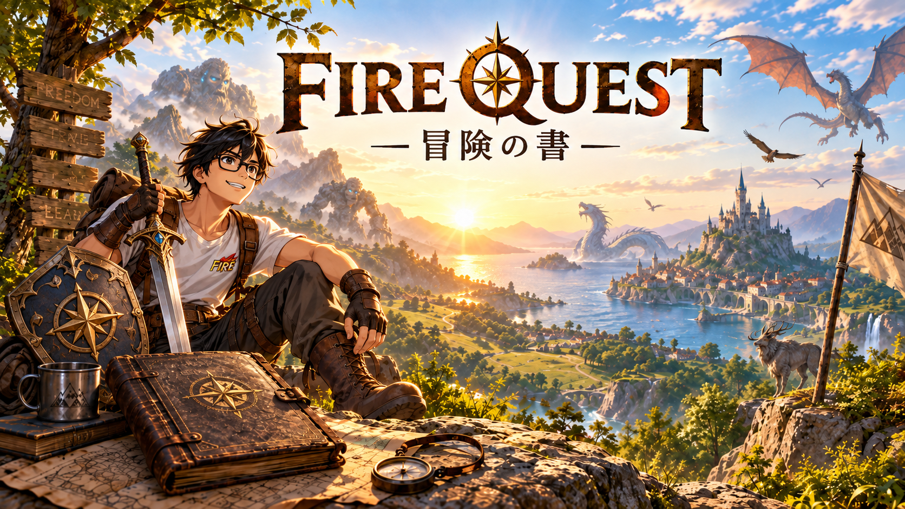
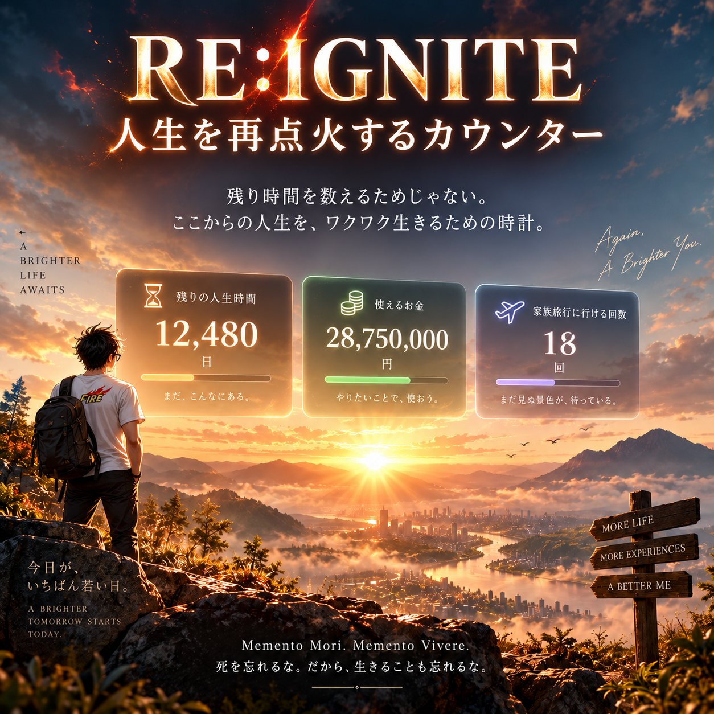
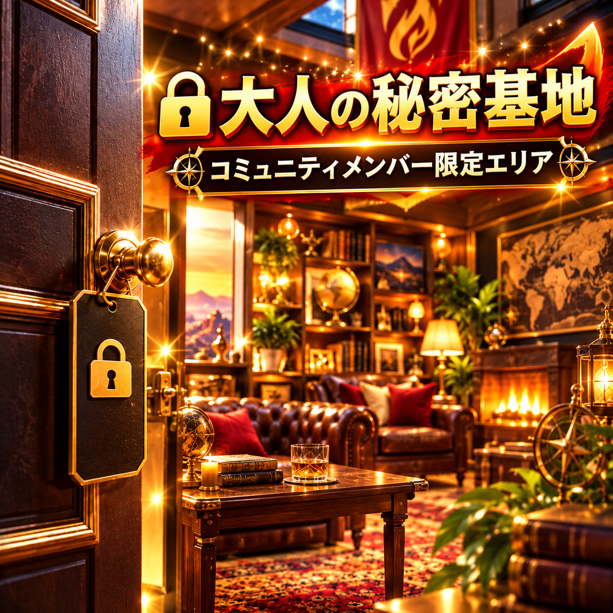
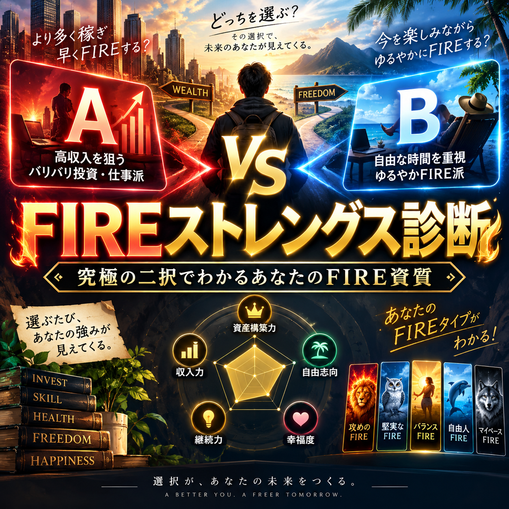

ワクワクFIREをアプリに追加
このトップページをスマホのホーム画面・PCのお気に入りに保存
ワクワクFIREをアプリに追加
このトップページをスマホのホーム画面・PCのお気に入りに保存
FIREを、もっと楽しく。
ワクワクFIRE
会社を辞めたら、
人生はもっと遊べる。
診断したり、旅したり、仲間と話したり。
自分らしい「これから」を、楽しく探そう。
FIREは、働かないことがゴールじゃない。自分の時間を、自分で選べること。

FIRE QUEST 読むほど、遊ぶほど、あなたの冒険が育っていく。
RE:IGNITE 人生を再点火するカウンター 残りの人生時間・使えるお金・これからできる体験回数を見える化する、人生カウンター。 人生を再点火する →
ワクワクFIREをアプリに追加
このトップページをスマホのホーム画面・PCのお気に入りに保存

🔒 メンバー限定 COMMUNITY MEMBERS ONLY 🔒 大人の秘密基地 ワクワクFIREコミュニティ メンバー限定。限定資料、厳選コンテンツ、コミュニティ限定企画をまとめています。 秘密基地をのぞく →
無理なく、楽しく、人生をデザイン✦
診断・ゲーム・移住・本を楽しもう✦
無理なく、楽しく、人生をデザイン✦
診断・ゲーム・移住・本を楽しもう✦
ABOUT WAKUWAKU FIRE
FIREをもっと、
楽しく。
FIREは「働かないこと」がゴールじゃない。
自分の時間を、自分で選べること。
ワクワクFIREは、FIREをテーマに診断・ゲーム・移住・便利ツール・読み物を楽しめる総合サイトです。難しい話はあとまわし。まずは、あなたのワクワクから。
01楽しく知るむずかしい話を
わかりやすく。
わかりやすく。
02想像してみるどんな毎日が
理想か考える。
理想か考える。
03一歩うごく小さな行動を
遊びながら。
遊びながら。
LIFE AFTER WORK
FIREのある暮らしを、
ちょっと想像。
朝から走ってもいい。
夜まで遊んでもいい。


FUN CONTENTS
楽しい
コンテンツ。
診断・ゲーム・移住・本など。
FIREをテーマに、気になるカードで遊んでみよう。

診断する
DIAGNOSIS 02 / SPECIAL
FIREストレングス診断
45問の究極の二択から、あなたのFIRE資質TOP5と12種類のFIREタイプを見つけよう。

旅に出る
PLAY / WORLD TOUR
FIREワールドツアー
マルとシバくんと一緒に、訪れる国・食事・観光地を選びながら世界を旅しよう。

検証中
FIRE LAB / TOOLS
ワクワクFIRE研究室
あなたのFIREを数字で徹底診断！そのFIRE、本当に大丈夫？FIRE人生を全部シミュレーションしちゃおう！

診断する
DIAGNOSIS 01
動物FIRE診断
あなたはどの動物タイプ？12問で、自分らしいFIREの形を見つけよう。

案内所へ
LIFE STYLE / JAPAN
移住場所 勝手に案内所
国内版
会社を辞めたらどこへ行く？日本の「好き」を旅する案内所。

診断する
LIFE STYLE / WORLD
移住場所 勝手に案内所
海外版
海外FIRE移住診断で、いつか暮らしたい国や街をのぞいてみよう。

遊べる
PLAY / LIFE
命短し
使えよお金
～お金を使いきって、満足に昇天せよ～

遊べる
PLAY / LIVE
RISK RUNNER
売るだけで、生き残れ。FIREの資産を守りながら、何年生き残れる？

見る
VIDEO
YouTube
FIREのこと、暮らしのこと。動画でゆるく、楽しくお届けします。

見る
WAKUWAKU OTOKU
今日・今週のお得一覧
公式ページで確認した、ポイ活・ポイント還元・クーポンをチェックしよう。

読む
WAKUWAKU MEDIA
FIREコラム
FIRE、サイドFIRE、資産形成、移住、自由な暮らし。気になる記事から読んでみよう。

読む
JOURNAL
note
FIREの考え方や、サイトの裏側をnoteで発信しています。

参加する
COMMUNITY
ワクワクFIREコミュニティ
ひとりで考えなくていい場所。ワクワクする仲間とつながろう。
TODAY'S BOOK
今日のおすすめ
FIRE本 📚
DAILY PICK今日の一冊
 WAKUWAKU
WAKUWAKUREADING
Amazonで見る
※当サイトはAmazonアソシエイト・プログラムを利用しています。
リンクを登録した本の中から、日本時間の日付で毎日1冊を紹介します。
WAKUWAKU MEDIA
FIREコラム。
気になる記事から。
FIRE後の暮らし、時間の使い方、仲間との関わり方。実際の体験と考えをもとにした読み物です。

2026年8月31日
FIREの必要資産
FIREはいくら必要？生活費・年齢・家族構成別に考える現実的な目安
FIREはいくら必要なのか。30歳・資産6000万円で会社を辞めた僕が、FIRE直後のゲーム三昧、資産の増減、家族ができて変わった不安まで踏まえて、生活費から必要額を考えます。
記事を読む ↗.png)
2026年8月25日
コミュニティ
20人以上が続けてくれたFIREコミュニティで、運営して分かったこと
オンラインコミュニティを始めた直後、無料募集に数日で約150人が集まりました。数字だけ見れば大成功です。しかし、運営してみると、参加人数が多いことと、安心して話せる場所であることは別だと分かりました。
記事を読む ↗.png)
2026年8月24日
FIREの考え方
FIREしたい理由を聞いてみて、僕が考え直したこと
「なぜFIREしたいのですか？」と聞かれたとき、資産額や利回りの話だけでは答えきれない人が多いのではないでしょうか。のんびりしたい、家族と過ごしたい、働く量を自分で決めたい。反対に、定年まで働きたくない、忙しすぎる、お金が不安という理由もあります。
記事を読む ↗
ABOUT THE OPERATOR
運営者について。
ワクワクFIREのまる
30歳・資産6000万円でFIRE。FIRE生活6年目。
実際のFIRE生活で感じたことをベースに、FIREを「目指す」だけではなく「FIRE後をどう楽しむか」をテーマに、診断・ゲーム・コラムなどを制作しています。
YouTube「ワクワクFIRE」でも発信中。
詳しいプロフィール →企業・メディア・取材関係者の方はこちら ↗